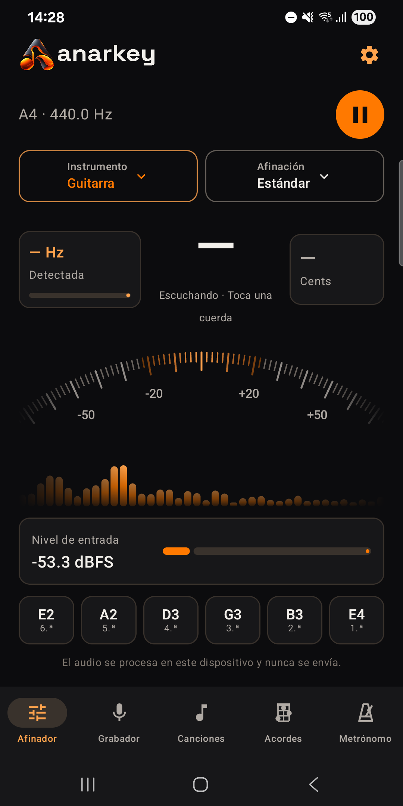
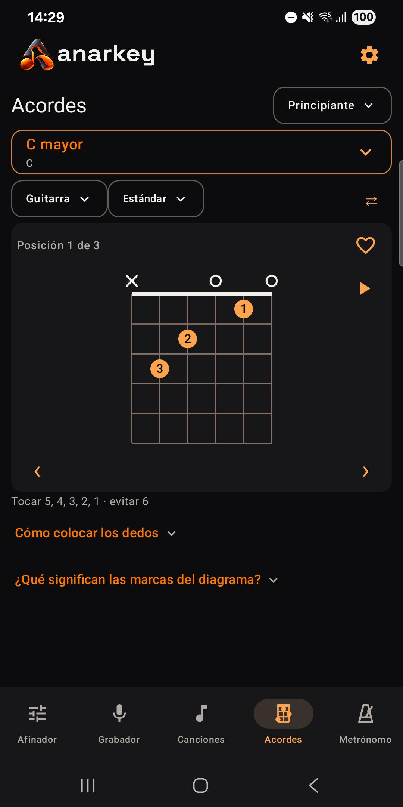
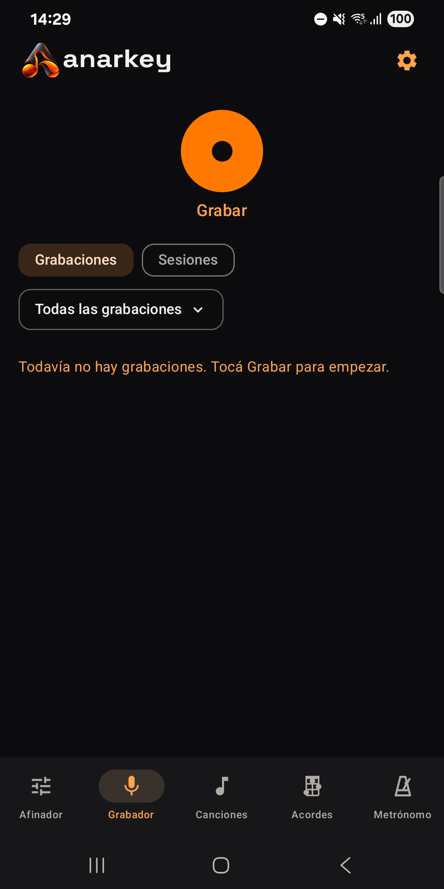
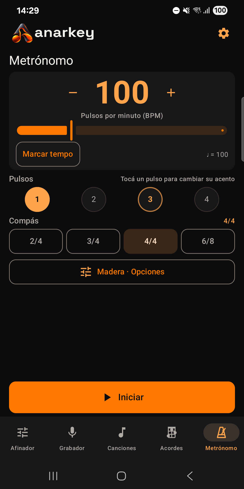

01Afinador
Encontrá tu tono.
Guitarra, bajo, ukelele, violín, mandolina y banjo. También modo cromático y frecuencia de referencia ajustable.

PARA ANDROID. PARA HACER MÚSICA.
Afiná. Explorá. Grabá esa idea. Tu próxima canción empieza con vos.
Cinco herramientas musicales en una app gratuita y de código abierto. Sin anuncios, sin cuentas, sin vueltas.
Hecha para músicos. No para accionistas.

01 / TU CAJA DE HERRAMIENTAS
De la primera cuerda al último ensayo. Lo que necesitás, a mano.
01Afinador
Guitarra, bajo, ukelele, violín, mandolina y banjo. También modo cromático y frecuencia de referencia ajustable.
02Acordes
Buscá digitaciones, explorá posiciones y tocá un diagrama para escuchar cómo suena. Incluye vista para zurdos.

03Grabador
Grabá ideas y ensayos, agregá marcadores y organizá tus tomas en sesiones. Incluso con la pantalla apagada.

04Metrónomo
Elegí tempo, compás, acentos y sonidos. El pulso sigue, aunque bloquees el teléfono.

05Canciones
Letra, acordes, notas y grabaciones, juntos. Transportá los acordes y seguí tocando.
En desarrollo activo: seguimos mejorando la estabilidad del afinador a medida que decae el sonido de las cuerdas.
02 / LAS COSAS CLARAS
Sin suscripciones, compras ni funciones premium escondidas. Todas las herramientas son para todos.
La app procesa el sonido en tu dispositivo. Sin rastreo ni analíticas. Ni siquiera pide permiso de Internet.
Código bajo licencia MIT. Podés estudiarlo, compilarlo y contribuir a que Anarkey siga mejorando.
FREE THE MUSIC.
Anarkey está creciendo. Conocé el proyecto, explorá el código o compartí una idea.
Encontranos en GitHub ↗